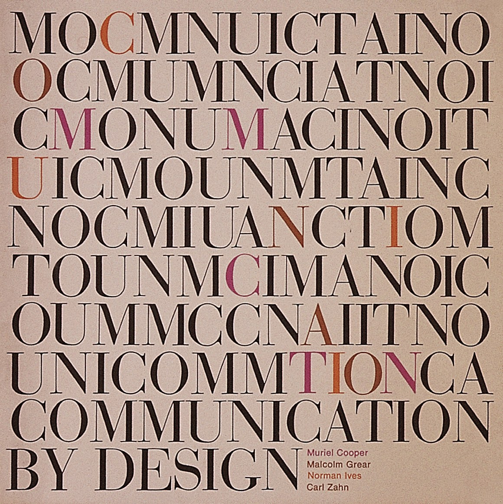

Cooper's Design Style
Cooper’s design sense was characterized by simple forms, clean lines, and what became her signature typeface: “Helvetica — something rather Swiss and precise,” Negroponte told the audience. “It’s crisp. It’s incisive. It’s almost Cartesian.” 
NEXT: Visible Language Workshop(VLW)